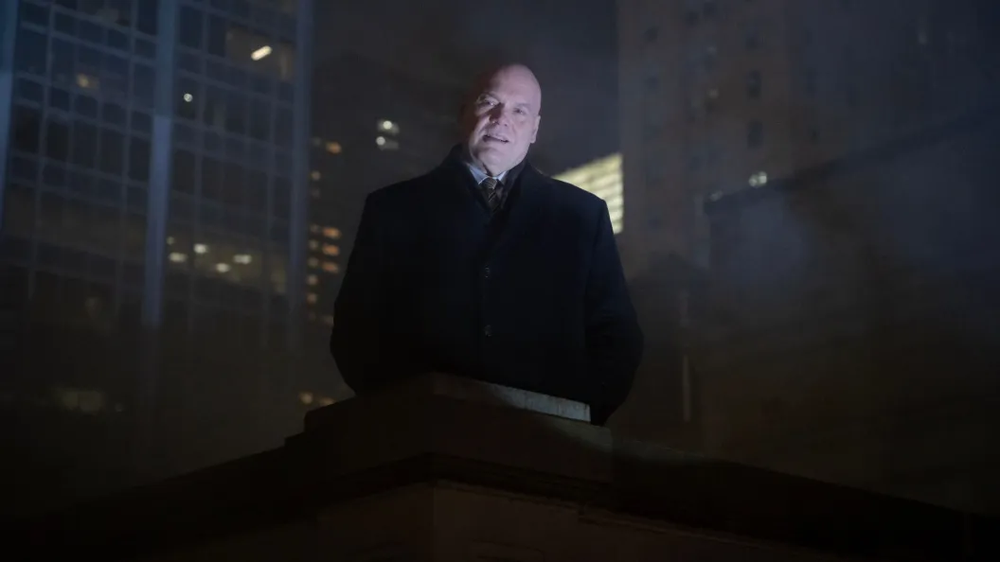
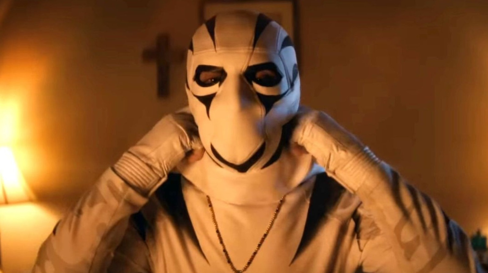

Après des années d’attente, Daredevil revient enfin avec Born Again, une série sombre qui s’annonce comme un tournant pour le MCU. Ces deux premiers épisodes marquent un retour fracassant, mêlant tragédie, tension et ambitions politiques. Voici mon avis détaillé.
⚠️ Attention : Cette critique contient des spoilers sur la série Daredevil Born Again. ⚠️
Un retour brutal et intense
Dès l’ouverture, Born Again impose son ton : New York est plus sombre que jamais, gangrenée par la criminalité. Matt Murdock, Foggy Nelson et Karen Page, inséparables depuis toujours, tentent de continuer leur vie malgré ce chaos. Mais tout bascule lorsqu’un appel mystérieux mène Foggy à sa fin tragique.
L’apparition de Bullseye, assassin froid et terrifiant, plonge immédiatement la série dans un drame intense. La mise en scène de la confrontation entre lui et Daredevil est magistrale : un combat brutal, rythmé par le battement de cœur faiblissant de Foggy. L’émotion est à son comble lorsque Matt, impuissant, entend son dernier souffle. Le choix de ne pas insister sur des dialogues mais de laisser les images et les sons parler est un pari réussi.
Cette séquence d’ouverture est un électrochoc. Elle rappelle que Daredevil n’est pas une simple série de super-héros, mais un drame profond où chaque perte a des conséquences durables.
Matt Murdock brisé, Wilson Fisk en ascension
Un an après la tragédie, Matt est un homme détruit. Il tente d’aller de l’avant dans son travail d’avocat, mais rien ne comble l’absence de Foggy. Son éloignement avec Karen accentue son isolement, et son début de relation avec une psychologue semble être une tentative désespérée de se reconstruire.
Pendant ce temps, Wilson Fisk sort de l’ombre avec un plan implacable : devenir maire de New York. L’idée d’adapter l’arc Devil’s Reign est une excellente surprise, promettant une confrontation politique et physique entre Matt et Fisk. Le dilemme moral de Matt – doit-il laisser Fisk agir légalement ou l’arrêter par tous les moyens ? – ajoute une dimension psychologique fascinante.
La série réussit à nuancer Fisk d’une manière inédite. Plus calme, réfléchi, il ne cherche plus la violence brute mais le pouvoir légitime. Son couple avec Vanessa est au cœur de son évolution : elle a pris en main ses affaires criminelles, mais leur relation est fragilisée. Leur thérapie de couple est un ajout surprenant mais efficace, montrant un Fisk vulnérable et humain, loin du monstre qu’il était auparavant.
Des ajouts intrigants : White Tiger et Muse
L’introduction de White Tiger apporte une nouvelle dynamique. Son implication dans une affaire de meurtre divise l’opinion publique et place Matt dans une position difficile. La version plus âgée du personnage et la potentielle transmission de son héritage à sa fille sont des pistes intéressantes.
Enfin, la menace de Muse plane en arrière-plan. Son obsession pour Fisk, exprimée à travers ses graffitis, annonce un antagoniste imprévisible. L’idée d’un artiste meurtrier jouant avec la perception du public sur Fisk et Daredevil est prometteuse.
Un final saisissant
L’épisode 2 se termine sur une séquence d’une intensité rare : Matt, en pleine traque d’un témoin clé, est attaqué par des policiers corrompus liés au Punisher. Ce combat est d’une brutalité inouïe, et surtout, il marque un tournant pour Daredevil. Il ne retient plus ses coups. Il tue.
Ce choix radical brise son code moral et ouvre la porte à une confrontation inévitable avec le Punisher. La série ose pousser Matt dans ses retranchements, et cela la rend encore plus captivante.
Conclusion : un début magistral
Ces deux premiers épisodes de Daredevil: Born Again sont un sans-faute. La mise en scène est nerveuse, l’écriture poignante et la violence parfaitement dosée. Les plans-séquences sont impressionnants, la CGI est propre et l’ambiance sombre renoue avec l’esprit de la série originale.
L’introduction de Devil’s Reign, la complexité de Fisk, l’effondrement de Matt… tout est réuni pour faire de cette saison un moment marquant du MCU. Si la suite maintient ce niveau de qualité, on pourrait tenir l’une des meilleures séries Marvel à ce jour.
Un épisode par semaine jusqu’à Thunderbolts, et honnêtement… je n’ai jamais été aussi impatient.
Une critique exceptionnelle
Ce début de saison de Daredevil: Born Again est pour le moment une critique exceptionnelle, mais je préfère attendre que la série soit terminée pour vous livrer une critique complète et plus approfondie. Il reste encore beaucoup à découvrir, et j’ai hâte de voir comment l’histoire évolue dans les prochains épisodes.
En attendant, pour ceux qui suivent les grosses actualités concernant l'univers Marvel, vous pouvez retrouver un article sur la restructuration importante chez Marvel Studios ici : Marvel Studios : Restructuration et Nouveaux Changements.